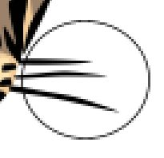
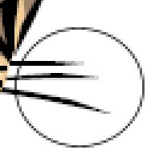
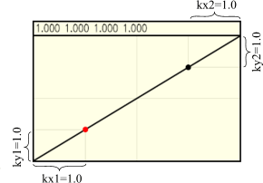
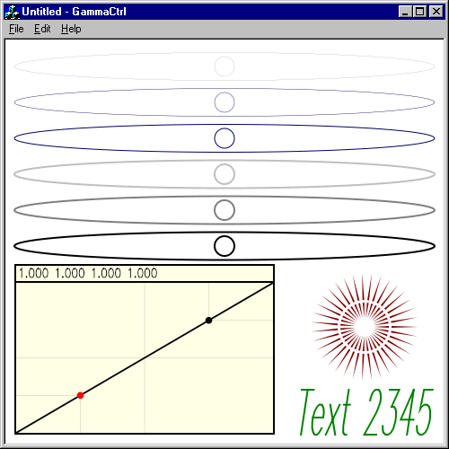
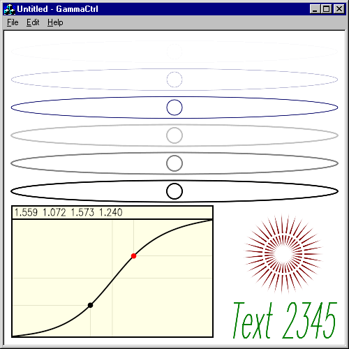
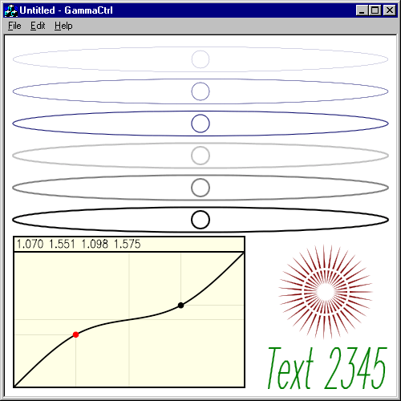
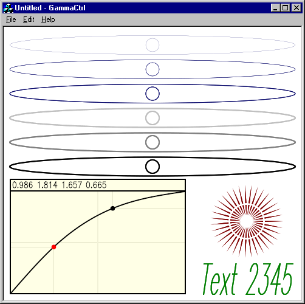

|
| Using Gamma Correction in Anti-Aliasing |
|
Using Anti-Aliasing technology is always a difficult task. The difficulty here
is not only in algorithms, but also because the visual quality of the image depends
on the displaying equipment. Anti-Aliased images look differently on CRT monitors and on LCD
ones. In general it's a science (or maybe even art) called Color Management.
Anti-Grain Geometry uses the approach of Anti-Aliasing that potentially allows us to
obtain the best result. The rendering procedure calculates the exact coverage for
every boundary pixel and as a result one can have any number of Anti-Aliasing levels.
AGG uses 256 levels which is quite enough for any practical purpose and much better than
5-level Anti-Aliasing used in many applications, for example, True-Type font renderers,
almost all Adobe products and so on.
I was absolutely sure that the rendering method I use gives the best result. But
when I tried to render the same image with AGG and
Adobe SVG Viewer I found out that although
the SVG Viewer uses only 5 levels of Anti-Aliasing, the result sometimes looks
better than AGG. Look. The lion's moustache look smoother when rendering with 5-level Adobe SVG Viewer, al least on CRT monitors. But still, the enlarged images show us the lack of the Anti-Aliasing levels used in Adobe Viewer.    Obviously, AGG can render better, but using a simple linear dependance Pixel Coverage -> Brightness is not the best and should be corrected. In color management it's called Gamma Correction. For gamma correction I use a simple array of 256 values that give the desired value of brightness depending on the pixel coverage. If all the values in the array are equal to their index, i.e., 0,1,2,3,4,... it means that there's no gamma correction. The array can be calculated using any approach, but the simplest method is to use a B-Spline curve with two reference points and four coeffitiens (kx1, ky1, kx2, ky2) that determine its shape. So, I created an application with a special gamma correction control that allows to calculate the array of the gamma values. It draws 6 very narrow ellipses, 6 circles and some other figures that can be used as a visual test of the quality of Anti-Aliasing.  The control points can be moved inside their quadrants. The following image looks much better at least on CRT monitors.
We actually can obtain much better looking ellipses of certain thickness and brightness, but it cannot be used for general case. The shown above example is a sort of average case which is not the best for certain parameters, but it gives us rather a good average result on CRT monitors as well as on LCD ones. Below are the examples of other shapes of the gamma curve.    Besides, the gamma correction strongly depends on the content of the image. The values which are good enough for rendering ellipses like shown above may give a very bad result when rendering small text glyphs. The latest require sharper forms while large geometric figures look better with very smooth edges.
Finally, this is the result of rendering the same lion with gamma correction for CRT monitors.
Now it looks better than the one rendered with Adobe SVG Viewer. |
| Copyright © 2002 Maxim Shemanarev (McSeem) |